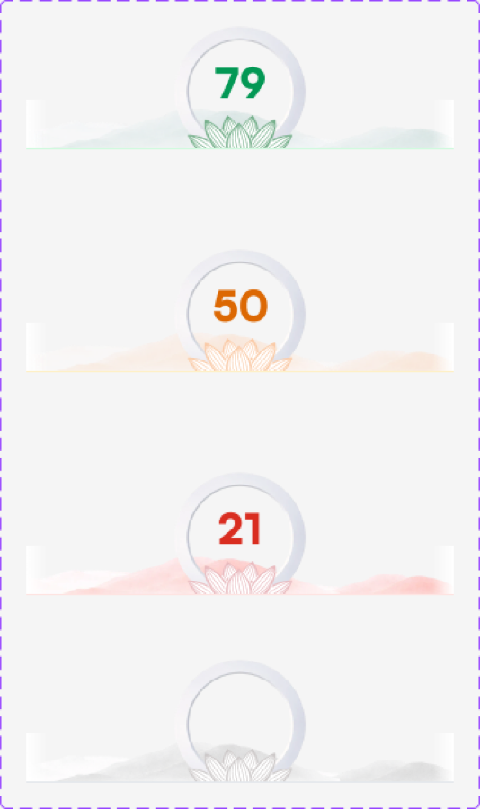
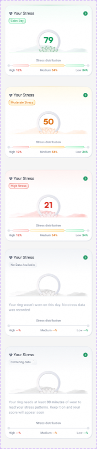
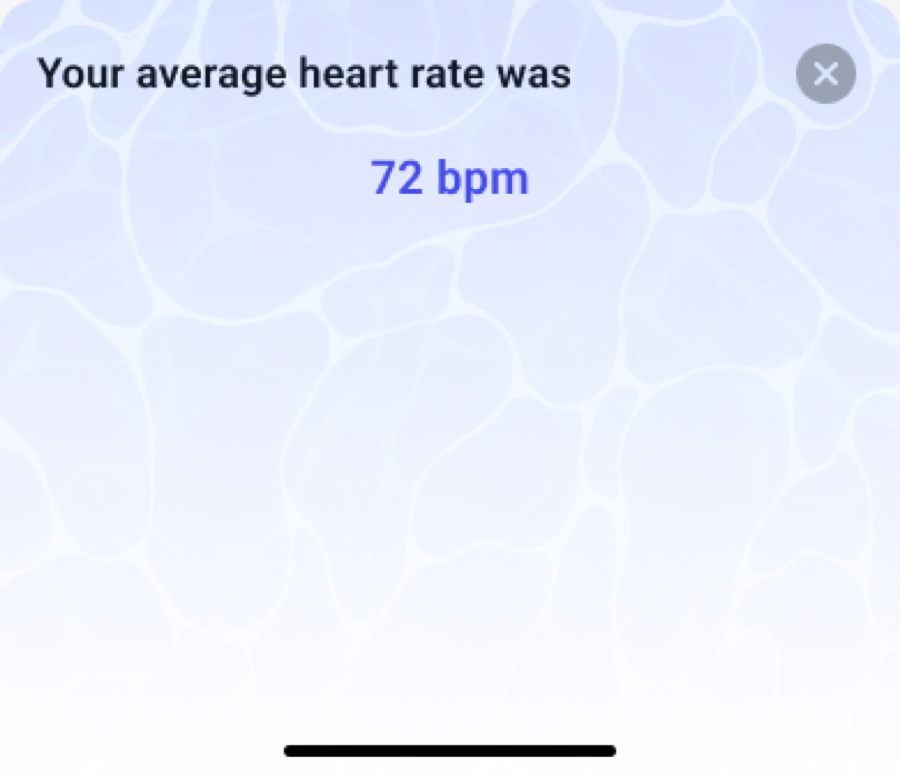
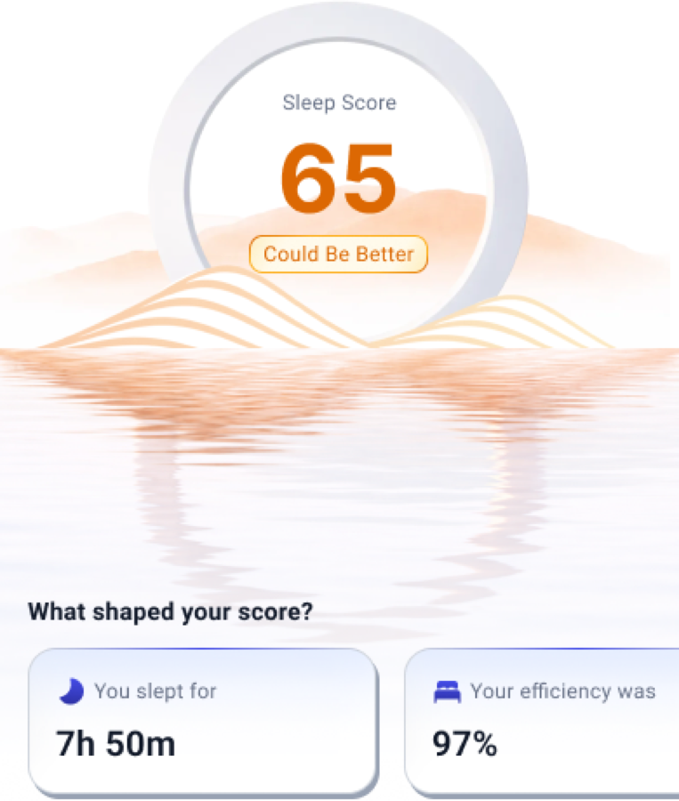
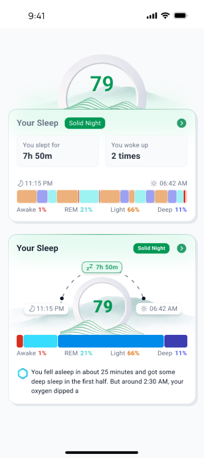
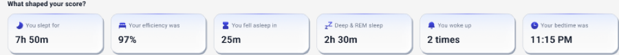
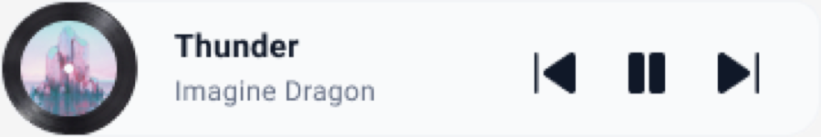
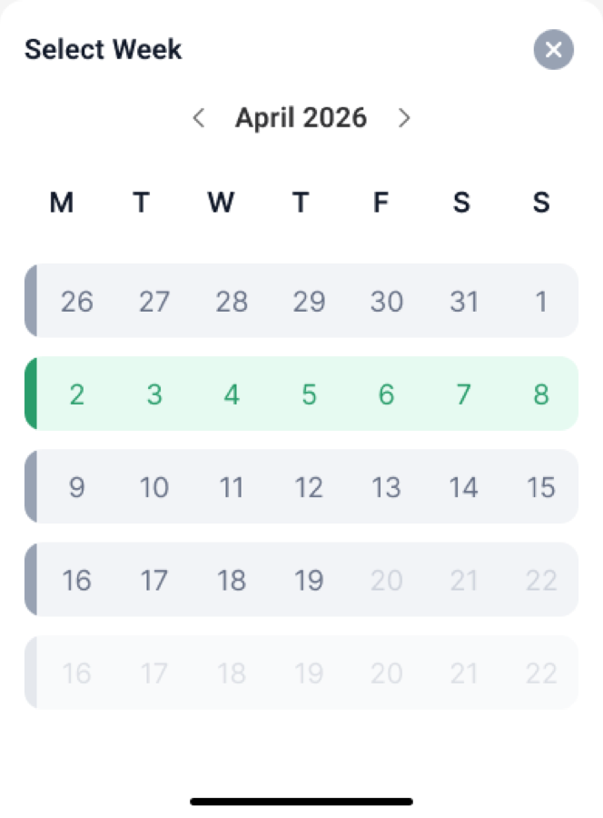
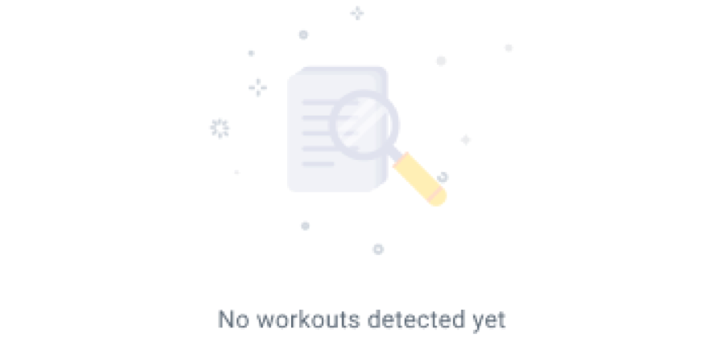

Mind screen, explored
The Mind screen has one job: show the Rhythm score, and make the few things that grow it easy to do, in any order, on any kind of day. This doc keeps the screen in GoodFlip's own language (Move's cards, Eat's sheets, the Cloud Drop score) and tries four ways to lay out the plan, plus better versions of each part: a breathing player you can pause, and warm replies after every log.
Every phone below is the live prototype, mind/screen.html, set to a case with flags. Tap inside any phone. Breathing runs ten times faster here so the whole session can be seen.
Who uses it, on what kind of day
Every layout has to work for all of these, not just the tidy day.
| Group | Scenario | What the screen must do |
|---|---|---|
| Arriving | No plan yet | Lock the score, say what unlocks it, never show empty tasks |
| Plan just arrived, first morning | Explain in one line what counts; start at 0 without making 0 feel like failure | |
| Opens at 7 AM, nothing logged | Point at one thing: log last night | |
| Sleep | Slept to plan | Confirm warmly, move on |
| Short or late night | No blame. Say what helps tonight | |
| Fell asleep after midnight | Yesterday or Today must be obvious, the hours must still be right | |
| Forgot to log until evening | Still loggable all day, without guilt | |
| Breathing | Interrupted mid-session (a call, a knock) | Pause, keep progress, resume from the row |
| Stops early on purpose | Let them count what they did, or keep going | |
| Does not know the technique | Show the steps before it starts; the orb leads, words follow | |
| Mood | A good day | Celebrate lightly, ask what made it good |
| A low or awful day | Reply with care, never lower the score, offer the coach and a helpline | |
| Changes their mind | Tap another face; nothing is lost | |
| Me-time | Did more than one | One is enough; more is welcome, never needed |
| Did something not on the list | Open question for the coach list (noted under Open items) | |
| The day | Busy day, only one thing done | The score still moves; nothing says "missed" |
| Everything done | A calm "all done" and a reason to come back tomorrow | |
| Mis-tap | Every tick is undoable in place | |
| People | Older user, small text, little English | Big targets, plain words, one action per row |
| Phone only, no watch | Sleep is typed in, fast, from the coach's times |
The rules every variant is held to
- Visibility of status. "3 of 7 done", ticks, the score moving, "Paused at 2:10".
- Match the real world. "Last night", "How was today?", no "consistency %".
- User control. Pause, Resume, End, Undo; any face can be changed.
- Consistency. Move's card, Eat's sheet, one tick style, one green.
- Error prevention. Wake-up before bedtime is caught; times start at the plan.
- Recognition over recall. Faces, chips and pickers, never typing.
- Flexibility. Any order, any time of day.
- Minimal design. One card, details in sheets.
- Recover from errors. Plain messages that say how to fix it.
- Help. The breathing steps shown before starting; the score sheet explains Rhythm.
- Proximity. Items of one kind sit together under one small label.
- Common region. One card holds the day; Variant C splits night and day into two regions to mirror 70 / 30.
- Similarity. Same row shape for every item; a chevron only where a sheet opens.
- Continuity. Items follow the day's order; the night bar runs left to right like a clock.
- Closure. The ring in the card header and the breathing ring close as things finish.
- Figure and ground. The sheet lifts over a dimmed screen; one primary button per sheet.
- Common fate. The score, the ring and the row tick move together on a log.
What the app says back
Every log gets one warm line. It names what happened, never judges, and offers the next kind step. A low mood never lowers the score; it opens care.
| After | The line | Where |
|---|---|---|
| Steady night | “A steady night’s sleep. Today should feel easier for it.” | Toast |
| Short night | “A short night happens. Go a little easy on yourself today, and try to get to bed a bit earlier tonight.” | Toast |
| Late night | “A late night. Going to bed close to 10:30 PM tonight brings your rhythm back.” | Toast |
| Long sleep | “A long sleep. If you are feeling run down, let your coach know.” | Toast |
| Great day | “Lovely to hear. Whatever you did today, it is working for you.” | Mood sheet |
| Good day | “Good to hear. Notice what made it good, so you can do more of it.” | Mood sheet |
| Okay day | “An okay day is still a good day to check in. Thank you for telling us.” | Mood sheet |
| Low day | “Thank you for being honest. Low days happen, and you do not have to carry this one alone.” + coach and Tele-MANAS | Mood sheet |
| Awful day | “I am really sorry today feels this hard. You are not alone. Your coach is here, and if you need someone right now, a free helpline is one tap away.” + coach and Tele-MANAS | Mood sheet |
| Breathing, full | “Well done. A few calm minutes, done.” | Toast |
| Breathing, ended early | “Counted. Every calm minute helps.” | Toast |
| Me-time | “Time for yourself, done. Small moments like this add up.” | Toast |
| Last wind-down step | “Nicely wound down. Rest well tonight.” | Toast |
- Praise the check-in, not the mood, so low days count too (How We Feel: “You're steadily building a habit of checking in”).
- Comfort before action after a slip (Finch: “It's okay to miss a day. The important thing is you're here today”).
- Be honest about limits on a hard day and lead with named, free help (Wysa, Alan: “free, confidential, and available 24/7”).
- A calm win for a calm goal: a quiet screen, not confetti (Finch).
- All done reads as a goodbye that points at tomorrow (Insight Timer: “See you tomorrow!”).
- Leading with loss: “1 Day streak lost” (Cal AI).
- Confirming a log with numbers only: “1h 47m of 8h goal” (Fitbit) gives no care.
- Asking why a mood is low as if it were a fault. Ask what shaped the day, and make it optional.
Ways to lay out the plan
The score, the line under it and every sheet stay the same. Each layout uses Move's own card: the soft indigo top, the two-tone border, the same header. Each phone opens on the same afternoon: last night logged, breathing and the tea cut-off done.
E. A card per practice
RecommendedFive compact cards, one per practice: an icon, the name, one line of status, and one action on the right (Log, Check in, Start, Pick one). A done card turns its icon green, shows a tick and keeps a quiet Edit, Change or Undo. Wind-down is the one card with its ticks inside, because ticking them needs no sheet.
Each practice is its own region (common region), status reads at a glance, one obvious action each. Matches Move's day of cards. Short: most cards are a single row.
Five cards is more chrome than one list; wind-down's card is taller than the rest.
F. Two-up cards
CompactSleep as a full-width card on top, as the biggest part of the score. Below it, Mood, Breathing, Me-time and Wind-down as four half-width cards, each with a full-width action. Wind-down's ticks open in a sheet.
The shortest of all: the whole plan fits under the score on most phones. Big, equal touch targets.
Half-width cards cut the status lines short; one more tap for wind-down.
G. Swipe through
Least height"2 of 5 done today", then one taller card per practice in a row you swipe, with dots that turn green as each is done.
Takes the least height and gives each practice room.
Hides four of five cards; older users may not know to swipe. Recognition suffers.
A. One list, grouped
For comparisonThe current screen: one card, five small labels, one row each.
The whole day in one region.
Every row looks alike, so the five practices blur together.
GoodFlip design system and the ring
From the GoodFlip design system and its Figma file (Ring Integration, Ring Vitals and Ring Actions pages). The closest existing designs to Mind are the Sleep Score and Stress screens.









- Primary button: green, 48px, 6px radius, a #2A805A depth bar that presses down. Secondary: white, green border and label.
- Labels lead with a verb: Start Breathing, Save Session, Count This Session, Save Last Night, Back to Today.
- Radii 8, 12, 16 and full only. Grey border #E4E7EC.
- The header ring is the system's stroke ring: 4px on a grey track.
- No coloured shadows, no looping animation outside the player.
- Selected pill tabs use the light green fill with green text.
- Information (the breathing tip, the care box) uses the gold background #FFFBEE.
- Mood faces. The system has no mood or emoji picker. The emoji faces are a stand-in; drawn line faces (outline and filled pairs) would match.
- A Rhythm ring. The stress lotus ring is the system's own calm motif and fits Mind. On the day screen, the Cloud Drop score stays for parity with Eat and Move; the lotus ring could carry Mind on Home or a score page.
- Hard offset shadow on cards. Move's card has it; the system keeps it for category cards. Mind follows Move for now.
- Ring art. The glass ring, lotus and landscapes need exports from Figma, not CSS copies.
References from other apps
Screens from Mobbin, by topic. Tap one to open it on Mobbin.
Loading…
Recommendation
Ship E: a card per practice. It uses Move's card as is, gives each practice its own region with one clear action, and shows status in the header so the day reads at a glance. Keep the better parts in every case: the pausable breathing player, the mood reply with care for a low day, and the warm line after every log.
Open items
- Breathing ended early: should "Count it" need a minimum, say 2 minutes?
- Me-time not on the coach's list: allow "Something else" with a word?
- "Ask Sahana to call": real coach notification and response time.
- Tele-MANAS number to be checked regularly, as the research doc notes.
- Emoji faces: the design system may want its own drawn mood glyphs.